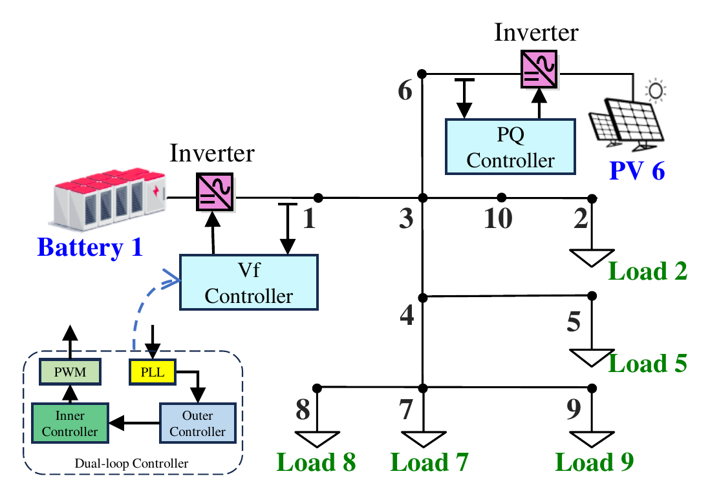
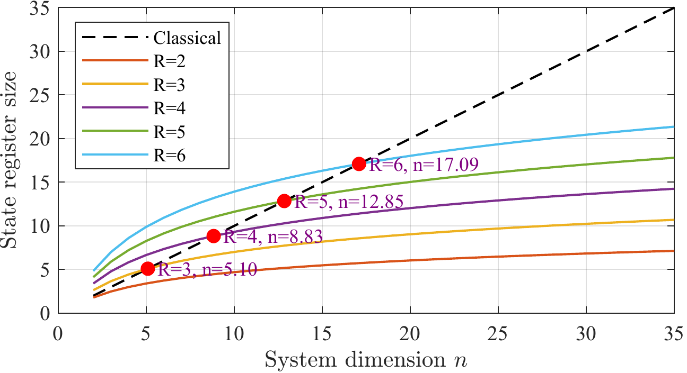
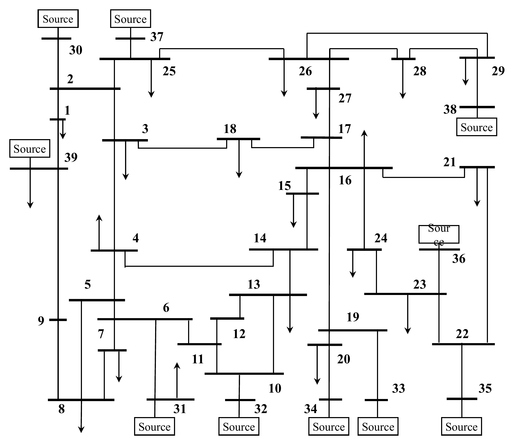
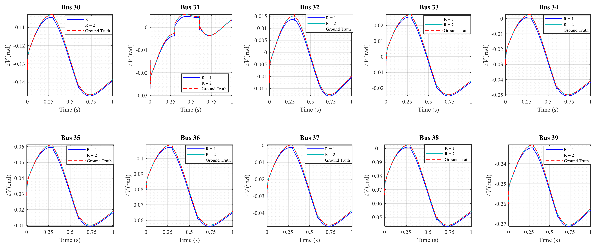
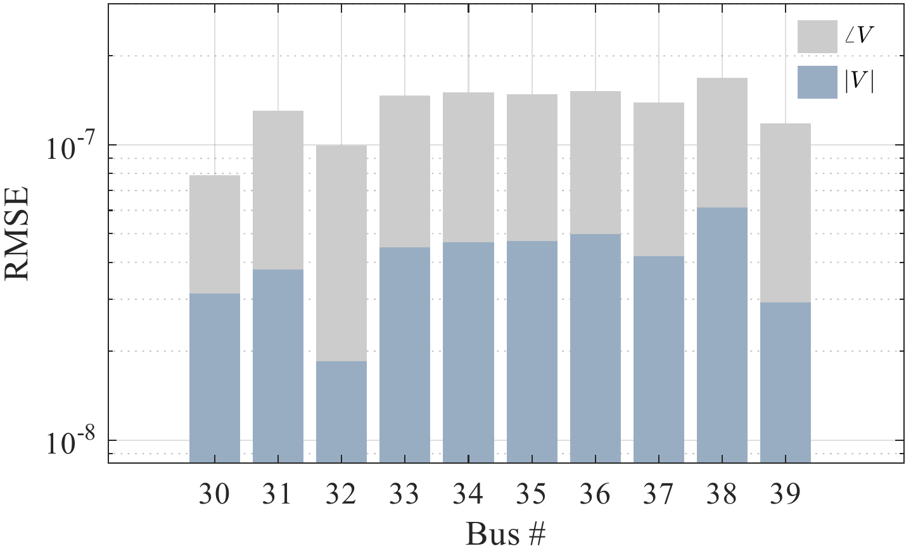

Project 6 — Quantum Computing for Power System Dynamic Simulation
Overview
This project develops a systematic computational framework for transforming nonlinear power-system dynamic models into forms compatible with quantum algorithms.
The framework begins with nonlinear differential-algebraic equations (DAEs). Jacobian-based differential embedding is used to transform algebraic constraints into differential form, while phase reparameterization removes trigonometric nonlinearities from the dynamic equations.
Center-shifted Carleman linearization is then applied to construct a lifted linear dynamic system that approximates the original nonlinear model. This representation provides a pathway for applying quantum linear-system algorithms and quantum dynamic-simulation methods to nonlinear power-system dynamics.
The resulting framework establishes a structured connection between conventional power-system DAEs, polynomial state representations, Carleman lifting, and quantum-compatible linear dynamics.
Motivation
Modern power systems contain increasingly large numbers of converter-interfaced resources, high-order controllers, and nonlinear network interactions. Their dynamics are commonly represented as DAEs,
\[ \dot{\mathbf{x}} = f(\mathbf{x},\mathbf{y}), \qquad \mathbf{0} = g(\mathbf{x},\mathbf{y}), \]
where
- \(\mathbf{x}\) contains differential states,
- \(\mathbf{y}\) contains algebraic network variables.
Conventional time-domain simulation advances these states sequentially using numerical integration while repeatedly enforcing the algebraic constraints.
Quantum algorithms, in contrast, are particularly well developed for linear systems and linear evolution operators. This creates a representation gap:
\[ \text{nonlinear power-system DAEs} \quad\not\rightarrow\quad \text{quantum linear-algebra primitives directly}. \]
This project addresses that gap by transforming the nonlinear DAE model into a structured lifted linear system while retaining high trajectory accuracy.
Framework

Core Idea
The complete transformation can be summarized as
\[ \boxed{ \text{DAEs} \rightarrow \text{ODEs} \rightarrow \text{Polynomial ODEs} \rightarrow \text{Carleman Linear System} \rightarrow \text{Quantum Solver} } \]
After the DAE elimination and polynomial reformulation, the system can be represented as
\[ \dot{\mathbf{u}} = \mathbf{F}_0 + \mathbf{F}_1\mathbf{u} + \mathbf{F}_2\mathbf{u}^{\otimes 2} +\cdots+ \mathbf{F}_R\mathbf{u}^{\otimes R}. \]
Carleman lifting augments the state using higher-order tensor powers,
\[ \widetilde{\mathbf{u}} = \left[ \mathbf{u}, \mathbf{u}^{\otimes 2}, \ldots, \mathbf{u}^{\otimes R} \right]^{\mathsf T}, \]
which produces the finite-dimensional linear approximation
\[ \dot{\widetilde{\mathbf{u}}} = \mathbf{A}\widetilde{\mathbf{u}} + \mathbf{b}. \]
This lifted linear representation is the interface between the original nonlinear power-system model and the quantum simulation algorithms.
DAE-to-ODE Reformulation
Carleman linearization requires a unified ODE representation, so the algebraic constraints must first be converted into differential form.
For
\[ g(\mathbf{x},\mathbf{y})=0, \]
implicit differentiation gives
\[ \frac{\mathrm{d}\mathbf{y}}{\mathrm{d}t} \approx - \left( \frac{\partial g}{\partial\mathbf{y}} \right)^{-1} \frac{g(\mathbf{x},\mathbf{y})}{\Delta t} - \left( \frac{\partial g}{\partial\mathbf{y}} \right)^{-1} \frac{\partial g}{\partial\mathbf{x}} \frac{\mathrm{d}\mathbf{x}}{\mathrm{d}t}. \]
For the power-system network equation, this produces an explicit evolution equation for the algebraic variables,
\[ \frac{\mathrm{d}\mathbf{y}}{\mathrm{d}t} = \frac{ \mathbf{Y}^{-1}\mathbf{I}(\mathbf{x}) - \mathbf{y} }{\Delta t} + \mathbf{Y}^{-1} \frac{\mathrm{d}\mathbf{I}(\mathbf{x})}{\mathrm{d}\mathbf{x}} \frac{\mathrm{d}\mathbf{x}}{\mathrm{d}t}. \]
The first term drives the variables toward the original algebraic manifold, while the second term propagates the instantaneous sensitivity generated by the differential states.
Polynomial Reformulation
A major source of nonpolynomial dynamics in inverter controllers is the trigonometric dependence introduced by phase-locked loops.
Instead of directly approximating \(\sin x_2\) and \(\cos x_2\) around a local operating point, the phase state is reparameterized as
\[ x_c=\cos x_2, \qquad x_s=\sin x_2. \]
Their dynamics satisfy
\[ \dot{x}_c=-x_s\dot{x}_2, \qquad \dot{x}_s=x_c\dot{x}_2. \]
Because sine and cosine are closed under differentiation in this representation, the explicit trigonometric functions can be removed from the state equations.
After this transformation, only a small number of remaining nonpolynomial terms, such as voltage magnitude, require local polynomial approximation.
Center-Shifted Carleman Linearization
For a quadratic polynomial system,
\[ \dot{\mathbf{u}} = \mathbf{F}_2\mathbf{u}^{\otimes 2} + \mathbf{F}_1\mathbf{u} + \mathbf{F}_0, \]
the Carleman construction treats higher-order monomials as additional states.
To improve numerical behavior, the dynamics are shifted around a reference point \(\mathbf{u}^{*}\),
\[ \mathbf{v} = \mathbf{u} - \mathbf{u}^{*}. \]
Near the shift center, the state deviations remain smaller, reducing the magnitude of higher-order lifted terms and improving the practical accuracy of a truncated Carleman representation.
For truncation order \(R\), the lifted dimension is
\[ N = \sum_{i=1}^{R}n^i = \frac{n^{R+1}-n}{n-1} = \mathcal{O}(n^R). \]
The resulting matrix has a sparse block-banded structure because each monomial degree interacts only with nearby degrees.
Quantum Solver 1 — Dilated Hamiltonian Simulation
The lifted system is generally nonunitary,
\[ \dot{\widetilde{\mathbf{v}}} = \mathbf{A}\widetilde{\mathbf{v}} + \mathbf{b}, \]
so standard Hamiltonian simulation cannot be applied directly.
After converting the system to homogeneous form, the linear operator can be decomposed as
\[ \mathbf{A} = -i\mathbf{L} + \mathbf{K}, \]
where \(\mathbf{L}\) and \(\mathbf{K}\) are Hermitian.
A larger Hermitian operator is then constructed,
\[ \widetilde{\mathbf{H}} = \mathbf{I}_C\otimes\mathbf{L} + i\mathbf{M}\otimes\mathbf{K}, \]
where \(\mathbf{M}\) is an anti-Hermitian auxiliary operator.
The enlarged quantum state evolves unitarily,
\[ |\Psi(t)\rangle = e^{-i\widetilde{\mathbf{H}}t} |\Psi(0)\rangle, \]
and the original nonunitary linear dynamics can be recovered through an appropriate projection.
This formulation provides a route for connecting the Carleman-linearized power-system model to Hamiltonian-simulation techniques.
Quantum Solver 2 — QLSA-Based Time Marching
A second approach discretizes the lifted ODE in time. Using forward Euler for illustration,
\[ \widetilde{\mathbf{v}}^{(k+1)} = \widetilde{\mathbf{v}}^{(k)} + \Delta t\, \mathbf{A}\widetilde{\mathbf{v}}^{(k)} + \Delta t\,\mathbf{b}. \]
All time steps can be stacked into a single linear system,
\[ \mathbf{G}\boldsymbol{\mu} = \boldsymbol{\beta}, \]
with the block lower-bidiagonal history matrix
\[ \mathbf{G} = \begin{pmatrix} \mathbf{I} & & & \\ -(\mathbf{I}+\mathbf{A}\Delta t) & \mathbf{I} & & \\ & \ddots & \ddots & \\ & & -(\mathbf{I}+\mathbf{A}\Delta t) & \mathbf{I} \end{pmatrix}. \]
A quantum linear-system algorithm can then be used conceptually to prepare a state proportional to
\[ |\boldsymbol{\mu}\rangle \propto \mathbf{G}^{-1} |\boldsymbol{\beta}\rangle. \]
This formulation converts time-domain simulation into a global linear-algebra problem over the entire time horizon.
Method
The workflow used in this project is:
- Construct the nonlinear inverter-based power-system DAEs.
- Differentiate the algebraic constraints using the algebraic Jacobian.
- Separate real and imaginary network variables to obtain real-valued ODEs.
- Reparameterize phase states using sine/cosine state pairs.
- Approximate the remaining nonpolynomial terms to obtain polynomial ODEs.
- Shift the system around a reference point to improve truncation behavior.
- Apply finite-order Carleman lifting to obtain a structured linear ODE.
- Validate the lifted model against the original nonlinear time-domain simulation.
- Map the linear model to quantum solvers, including dilated Hamiltonian simulation and QLSA-based time marching.
- Evaluate state-register scaling and numerical accuracy on benchmark power systems.
Representative Python Implementation
The following snippets illustrate the main computational modules of the framework.
1. Jacobian-Based DAE Embedding
The algebraic constraint
\[ g(x,y)=0 \]
is converted into an ODE-like evolution using the Jacobians with respect to differential and algebraic variables.
Instead of explicitly computing \(J_y^{-1}\), the implementation solves the corresponding linear system directly.
import numpy as np
def algebraic_derivative(x, y, dx, g, Jx, Jy, dt):
rhs = g(x, y) / dt + Jx(x, y) @ dx
return -np.linalg.solve(Jy(x, y), rhs)This module provides the derivative of the algebraic variables so that differential and algebraic states can be handled in a unified dynamical model.
2. Phase Reparameterization
Trigonometric PLL states are replaced by
\[ x_c=\cos\theta, \qquad x_s=\sin\theta, \]
with dynamics
\[ \dot{x}_c=-x_s\dot{\theta}, \qquad \dot{x}_s=x_c\dot{\theta}. \]
def phase_states(theta, theta_dot):
xc, xs = np.cos(theta), np.sin(theta)
return xc, xs, -xs * theta_dot, xc * theta_dotThis removes explicit sine and cosine functions from the state equations and makes the model compatible with polynomial lifting.
3. Carleman State Lifting
For a polynomial system, Carleman linearization augments the original state with higher-order tensor products,
\[ z= \left[ u,\, u^{\otimes2}, \ldots, u^{\otimes R} \right]. \]
The lifted state can be generated recursively.
def carleman_state(u, R):
blocks = [np.asarray(u)]
for _ in range(2, R + 1):
blocks.append(
np.kron(blocks[-1], u)
)
return np.concatenate(blocks)For a quadratic model
\[ \dot{u} = F_0+F_1u+F_2u^{\otimes2}, \]
each Carleman block is assembled from Kronecker products of the polynomial operators.
def lift_block(F, n, degree):
block = 0
for i in range(degree):
block += np.kron(
np.kron(np.eye(n**i), F),
np.eye(n**(degree-i-1))
)
return blockThe complete truncated Carleman matrix is obtained by arranging these blocks according to polynomial degree and discarding terms above order \(R\).
This separation keeps the implementation modular: carleman_state() constructs the lifted state, while lift_block() provides the building block for the lifted dynamics.
4. Classical Validation
The nonlinear model and the lifted linear system are simulated side by side to evaluate truncation accuracy.
A compact RK4 integrator is used for both models.
def rk4(f, x, dt):
k1 = f(x)
k2 = f(x + dt*k1/2)
k3 = f(x + dt*k2/2)
k4 = f(x + dt*k3)
return x + dt*(k1 + 2*k2 + 2*k3 + k4)/6The validation loop then becomes
def simulate(f, A, b, u0, R, dt, steps):
u = u0.copy()
z = carleman_state(u0, R)
original, lifted = [], []
for _ in range(steps):
u = rk4(f, u, dt)
z = rk4(lambda z: A @ z + b, z, dt)
original.append(u.copy())
lifted.append(z[:len(u0)].copy())
return np.array(original), np.array(lifted)The first-order components of the lifted state are directly compared with the original nonlinear trajectories.
5. QLSA History System
After time discretization,
\[ v^{(k+1)} = (I+A\Delta t)v^{(k)} + b\Delta t, \]
all time steps can be combined into a sparse block lower-bidiagonal linear system,
\[ G\mu=\beta. \]
from scipy.sparse import eye, bmat
def history_matrix(A, dt, T):
I = eye(A.shape[0], format="csr")
step = I + dt * A
blocks = [
[
I if i == j
else -step if i == j + 1
else None
for j in range(T)
]
for i in range(T)
]
return bmat(blocks, format="csr")The right-hand side contains the initial state followed by the forcing terms.
def history_rhs(v0, b, dt, T):
return np.concatenate(
[v0] + [dt * b] * (T - 1)
)This module converts sequential time marching into a single structured linear-algebra problem suitable for a QLSA formulation.
6. Hermitian Dilation
The Carleman matrix is generally non-Hermitian. It is first decomposed as
\[ A=-iL+K, \]
where \(L\) and \(K\) are Hermitian.
def hermitian_parts(A):
K = (A + A.conj().T) / 2
L = 0.5j * (A - A.conj().T)
return L, KA larger Hermitian operator can then embed the original nonunitary dynamics.
def dilated_hamiltonian(A):
L, K = hermitian_parts(A)
M = np.array([
[0, 1],
[-1, 0]
], dtype=complex)
return (
np.kron(np.eye(2), L)
+ 1j * np.kron(M, K)
)This produces the Hermitian operator used by the dilation-based quantum simulation.
7. Representative Qiskit Evolution
For a small proof-of-concept system, one evolution step can be emulated with a unitary generated from the dilated Hamiltonian.
from scipy.linalg import expm
from qiskit import QuantumCircuit
from qiskit.circuit.library import UnitaryGate
def dilation_circuit(H, dt):
U = expm(-1j * H * dt)
n = int(np.log2(H.shape[0]))
qc = QuantumCircuit(n)
qc.append(UnitaryGate(U), range(n))
return qcThe dense matrix exponential is used here only for numerical demonstration. A scalable quantum implementation would instead require an efficient Hamiltonian representation and corresponding Hamiltonian-simulation primitives.
10-Bus Case Study
The first benchmark uses a 10-bus inverter-based power system with
- a voltage-frequency controlled generation unit at Bus 1,
- a PQ-controlled generation unit at Bus 6,
- five constant-power loads.

The model is tested under multiple disturbances:
- at \(t=0\), the load at Bus 7 is increased by 300%;
- at \(t=0.5\,\mathrm{s}\), the voltage reference changes from \(1.0\) to \(0.95\) p.u.;
- at \(t=1.0\,\mathrm{s}\), the Bus 7 load is restored;
- at \(t=1.5\,\mathrm{s}\), a current injection of \(0.05+j0.01\) p.u. is applied at Bus 1 while the voltage reference changes to \(1.02\) p.u.
The Carleman-linearized system closely follows the original nonlinear dynamics through all of these events.

Truncation Accuracy
The RMSE at Bus 1 remains extremely small even for a low Carleman truncation order.
| Variable | \(R=2\) | \(R=3\) | \(R=4\) |
|---|---|---|---|
| \(x_1\) | \(9.009\times10^{-10}\) | \(7.943\times10^{-11}\) | \(7.731\times10^{-11}\) |
| \(\cos x_2\) | \(3.654\times10^{-10}\) | \(5.547\times10^{-12}\) | \(2.586\times10^{-12}\) |
| \(\sin x_2\) | \(7.612\times10^{-9}\) | \(6.169\times10^{-10}\) | \(5.987\times10^{-10}\) |
| \(V\) | \(1.629\times10^{-8}\) | \(1.195\times10^{-8}\) | \(1.195\times10^{-8}\) |
| \(\angle V\) | \(5.218\times10^{-9}\) | \(8.420\times10^{-8}\) | \(8.420\times10^{-8}\) |
The results show that \(R=2\) already provides a favorable accuracy-efficiency trade-off for this study.
State-Register Scaling
The lifted dimension grows polynomially with the original system dimension, but an amplitude-encoded quantum state requires only logarithmically many state-register qubits.

For a lifted dimension \(N\), the state register requires approximately
\[ n_q = \left\lceil \log_2 N \right\rceil \]
qubits, excluding ancillary resources required by the complete quantum algorithm.
IEEE 39-Bus Case Study
The second benchmark uses the IEEE 39-bus New England system with 10 generation units. Bus 31 uses voltage-frequency control and the remaining generation units use PQ control.

The test applies multiple disturbances:
- at \(t=0\), the active-power demand at Bus 31 is increased by 10×;
- at \(t=0.3\,\mathrm{s}\), the Bus 31 voltage reference changes from \(0.982\) to \(1.02\) p.u.;
- at \(t=0.6\,\mathrm{s}\), the reference is restored.
Voltage Magnitude

Voltage Angle

For \(R\geq2\), the aggregate trajectory error remains around \(10^{-7}\).

Dilated Hamiltonian Simulation
The dilated Hamiltonian formulation is numerically emulated on a reduced 10-bus test case to demonstrate that the quantum-compatible linear representation reproduces the physical trajectories.

The resulting trajectories closely match the classical integration baseline over the simulated horizon.
This experiment is intended as a numerical validation of the dilation-based formulation rather than an end-to-end fault-tolerant quantum implementation.
Quantum State-Register Estimates
For the \(R=2\) lifted systems used in the analysis:
| System | Lifted Dimension \(N\) | State-Register Qubits |
|---|---|---|
| 10-Bus | 272 | 9 |
| IEEE 39-Bus | 6480 | 13 |
The lifted dimension therefore grows by almost \(24\times\) between the two benchmark systems, while the state register increases from only 9 to 13 qubits.
These numbers refer only to storage of the lifted state. Practical implementations additionally require ancilla qubits for Hamiltonian encoding, block encoding, amplitude amplification, or other algorithmic subroutines.
Main Contributions
Developed a systematic DAE-to-linear transformation pipeline that makes nonlinear power-system dynamics compatible with quantum linear-algebraic solvers.
Introduced a Jacobian-based differential embedding that converts algebraic network constraints into explicit ODE-compatible dynamics.
Applied phase reparameterization to remove trigonometric nonlinearities before Carleman lifting.
Developed a center-shifted Carleman formulation that preserves nonlinear polynomial structure while producing a structured finite-dimensional linear system.
Connected the transformed model to two complementary quantum paradigms: dilated Hamiltonian simulation and QLSA-based global time marching.
Demonstrated high trajectory accuracy on both 10-bus and IEEE 39-bus benchmark systems under large disturbances and changing operating points.
Numerically demonstrated that a dilated Hamiltonian formulation can closely reproduce power-system voltage trajectories.
Quantified the logarithmic scaling of the quantum state register, requiring 9 and 13 state-register qubits for the lifted 10-bus and IEEE 39-bus examples, respectively.